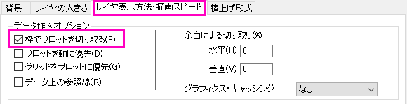

等高線図にベクトルグラフを重ねる
Contour-Overlay-Vector
概要
このチュートルアルでは、等高線図にベクトルグラフを重ねる方法を紹介します。

学習する項目
このチュートリアルでは、以下の項目について解説します。
- 等高線図を作成し、その色スケールを編集する
- XYAM型のベクトルグラフを作成する
- 2つのグラフを統合
ステップ
このチュートリアルは、チュートリアルデータプロジェクト（<Origin EXE フォルダ>\Samples\TutorialData.opj）と関連しています。
また、ラーニングセンターからこのグラフを呼び出すことができます。(ヘルプ: ラーニングセンター メニューを選択、または キーボードのF11 キーを押して、グラフサンプル：極座標グラフ：Polar Charts-Polar Contour from Matrixを選択します)
等高線図の作成
- TutorialData.opj を開き、プロジェクトエクスプローラでContour Plot with Vector Overlay フォルダを開きます。
- W147行列をアクティブにして、メニューから作図：等高線図：カラーマップ等高線を選択して作図します。次のグラフが作成されます。
- プロット上でクリックしてミニツールバーを開き、レベルの設定ボタンをクリックして、レベルの設定ダイアログを開きます。そして次のようにレベルを設定します。
-
- OK ボタンをクリックします。プロットを再度クリックして、ミニツールバーでパレットボタンをクリックし、リストからTemperatureを選択します。
-
- プロットを再度クリックして、ミニツールバーで等高線の種類ボタンンをクリックし、リストから等高線なしのカラースケールを選択します。
-
- 3番目のセクション2つのグラフを統合の準備をしましょう。まず、X 軸をクリックしてミニツールバーを開き、目盛ラベルを表示ボタンをクリックしてラベルを非表示にします。次に、ミニツールバーの目盛のスタイルボタンをクリックしてリストからなしを選択します。
XとY軸タイトルを削除します。
- 色スケールを編集するには、色スケールをダブルクリックし、色スケール制御ダイアログを開きます。次の設定を行います。
- ラベルノードでは、次の設定を行います。
- 表示の項目にある、自動のチェックを外し、カスタムフォーマットを*1にします。
- フォントサイズを22にします。
- レイアウトページでは、
- 背景ドロップダウンリストから枠線を選択します。
- カラーバーの太さを100にします。
- タイトル ページで、タイトルボックスにw(ms\+(-1)) を入力して、フォントサイズを26にします。
- 軸と軸目盛タブを開き、右の軸と軸目盛を表示と境界を表示のチェックを外します。
- OKをクリックし、色スケールをクリック＆ドラッグで希望の位置に移動します（例ではグラフの右側です）。
- ここまでの操作で等高線は以下のようになります。
XYAM型のベクトルグラフを作成する
-
WOR81147ワークシートを選択し、最後の3列を選択してメニューから作図：特殊グラフ：XYAM型ベクトルと選びます。
- ベクトルをダブルクリックし、作図の詳細ダイアログのベクトルタブを開きます。次の設定を使います：
OKをクリックします。
- 軸のスケールを更新するには、フォーマット：軸スケール：X軸と操作してダイアログを開き、編集を加えます。
- スケールタブで、開始＝1、終了＝10、増分の値＝2にします。
- 軸ダイアログのスケールタブを開いてから、左側パネルで垂直アイコンをクリックします。Y軸スケールを開始＝5、終了＝95、増分の値＝10に設定します。
- 軸ダイアログで軸と軸目盛タブを開きます。Ctrlキーを押しながら左側パネルで上と右を選択します。軸と軸目盛の表示のチェックをつけて主目盛と副目盛のスタイルを内側にします。これで、上X軸と右Y軸が表示されます。
- OKをクリックします。
- この時点でレイヤフレームからベクトルがはみ出している事が分かります。レイヤ枠内に表示されているか確認します。フォーマット：レイヤ を選択し、レイヤ表示方法・描画スピード タブで枠でデータを切り取る にチェックを入れます。OKをクリックします。

- ベクトルグラフの凡例で右クリックし、コンテキストメニューからプロパティを選択してダイアログを開きます。ダイアログを以下のように設定します。
2つのグラフを統合
上述の手順で等高線図とベクトルグラフを作成できました。これら、2つを統合します。
- 作成した等高線図とベクトルグラフ以外のグラフは最小化または非表示にしてください。この2つの内1つのグラフがアクティブな状態で、メインメニューからグラフ操作：グラフウィンドウの統合を選択します。
- merge_graphダイアログでは次のように詳細を設定します。
- 配置の設定ノードを開いて行の数を1にします。
- 間隔（ページサイズの％）ノードを展開し、右端余白テキストボックスに「25」を入力して色スケールを等高線の余白に表示出来るようにします。OKをクリックします。
- 全てのオブジェクトでフォントをVerdanaに設定するには、次のようにします。
- 各オブジェクトを1つずつ設定する方法では、オブジェクトを選択して書式 ツールバーのフォントボタンでで、 Verdanaを選びます。
または、
- 最終的なグラフはこのようになります。